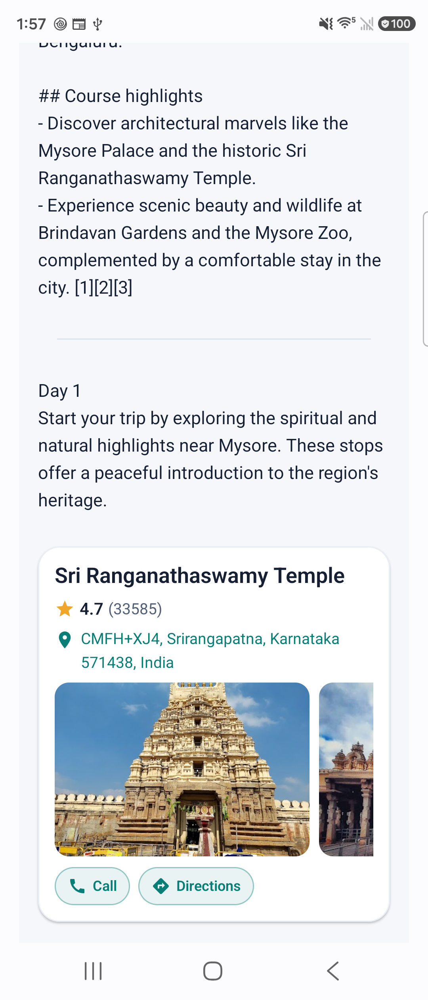
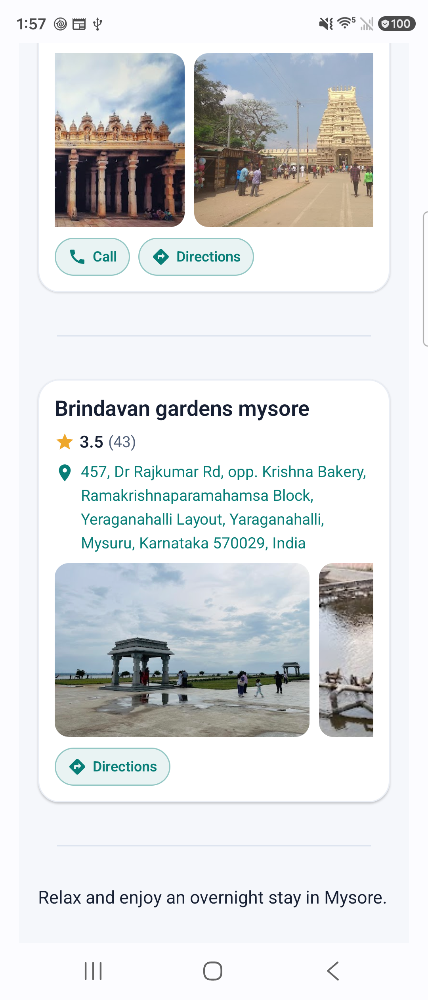
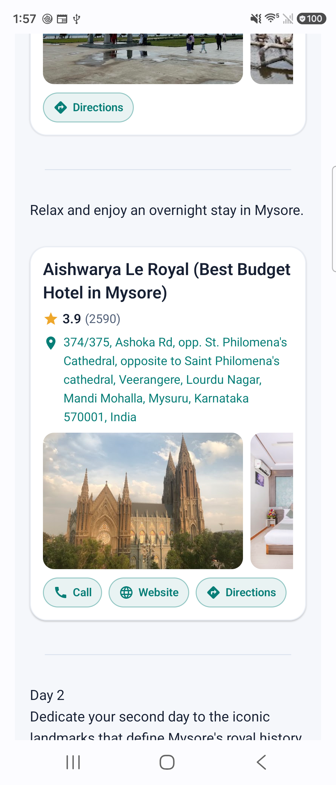
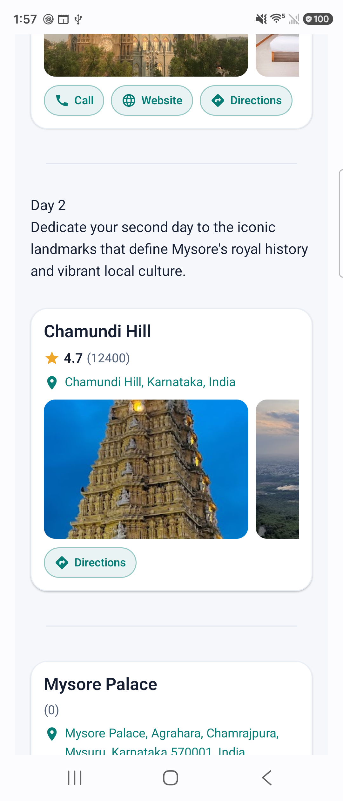
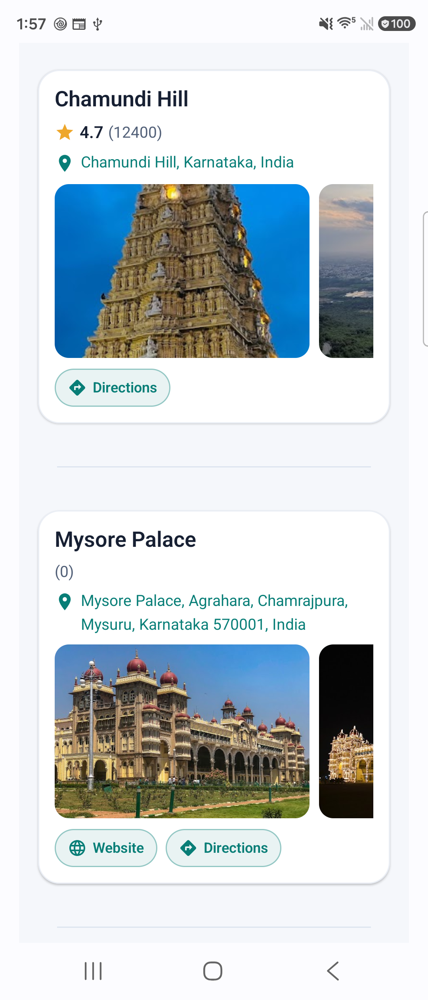
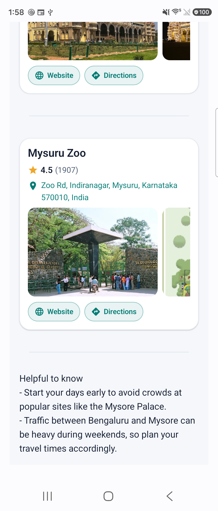

Sri Ranganathaswamy Temple


Place cards ready · 32 ms · no model inference
Local import/compile time; excludes photo downloads. No model inference for this structured answer.






Device screenshots, not mockups. Directions callback and first-card carousel tested. Bixby installation remains unchanged.